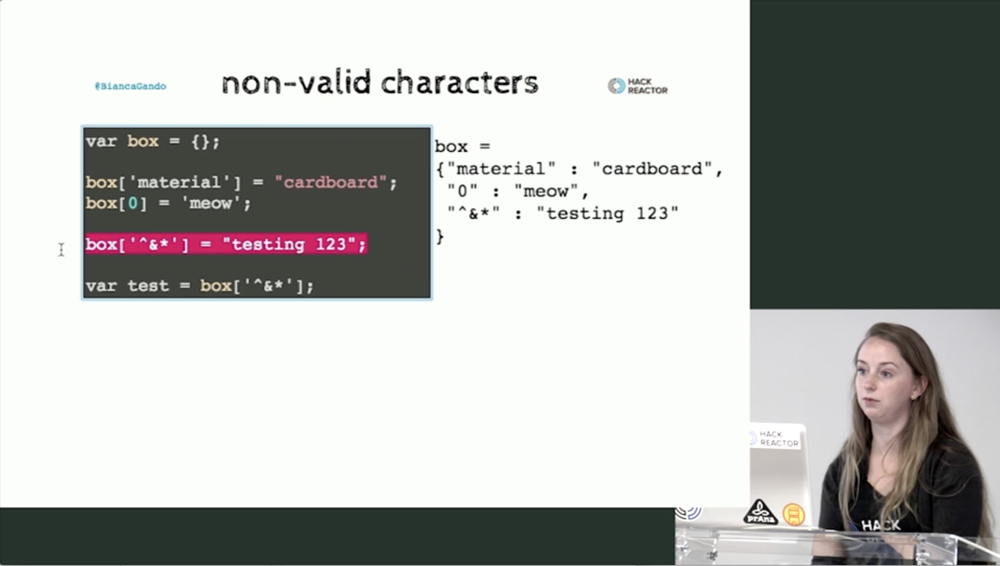
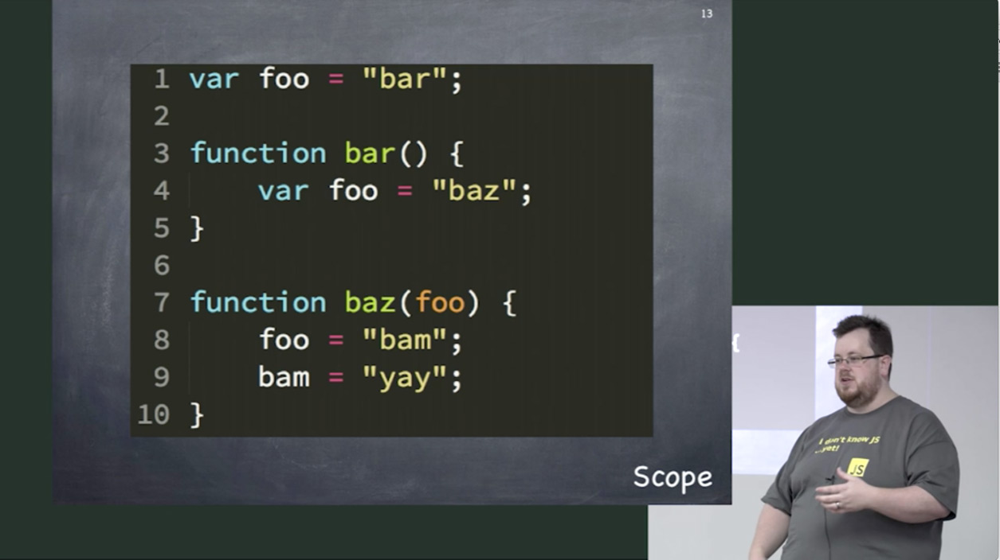
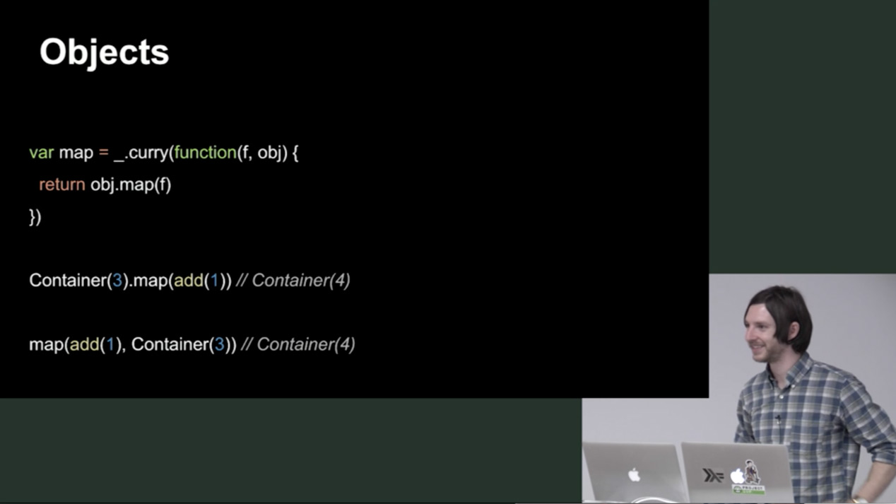

the link of articles
Hey DWB readers,
I'm super happy to sponsor this blog. I've been a long-time reader and fan, since back when David wrote about JavaScript and MooTools back in 2007. ;-)
We are in one of the fastest changing, evolving, most lively communities on earth: JavaScript and front-end web development. And it's a blast! There are lots of options to keep up to date, including this blog. But what if you want to go deeper? I'm here to tell you about one of the best options out there for going deeper and becoming the best developer you can be.
I've been a front-end developer since ~2005 full time, and one thing I've noticed being self-taught is that I miss out on core fundamentals that caused me pain along the way. I started copying and pasting examples from blogs just like this one and eventually worked my way up to writing my own very large applications that made companies millions of dollars. Success...?
Sort of...but programming isn't something you ever "arrive" in. Along that road I ran into many large bumps and hurdles that could have been avoided with taking some time to sharpen my knowledge of the deeper fundamentals. Once you start loving writing code, you will never stop learning.

Frontend Masters
When I was starting out with JavaScript I would have loved to take Bianca's course on JavaScript: Fundamentals to Functional (try a free on the JavaScript module pattern) to understand the basics of JavaScript as well as making my code more reusable with the utilities provided in underscore.js or lo-dash.

Frontend Masters
Going even deeper into JavaScript there are concepts you need to understand like scope/closure, 'this', hoisting, and inheritance. If you don't have a solid understanding of these concepts you'll wonder why your code has errors or the results aren't what you expected. All of this is covered in great detail in Kyle Simpson's Advanced JavaScript course. You can get part of Kyle's Advanced JS course for free.

Frontend Masters
Finally, one of the things I missed out on almost entirely in my adventures is functional programming. All of the latest frameworks like React and Angular 2 are being heavily influenced by the concepts behind functional programming. The idea is you want to keep your data flowing in one direction and not mutate state in the middle of your programs or functions. You do this with using concepts like map, reduce and filter. All of this is to increase reusability and composability of your functions. Check out our Hardcore Functional Programming in JavaScript course to learn these concepts.
You want to focus on deep fundamentals of programming rather than learning the *latest hot framework* because abstractions leak and you need to know what's under the hood. Even so, I do think there are merits to frameworks so we need to know the popular ones as front-end engineers and learn to work in them. Once you learn the deep fundamentals of JavaScript, the world is your oyster. Frameworks like Angular and React are much easier to understand why they exist and what to do with them. We even have a course on Choosing a JavaScript Framework so you can compare the top four JS frameworks and decide which one you want to go deeper in. From there you can dig into specific frameworks like React with Ryan Florence or Angular Application Development with Lukas Ruebbelke. You can also get a free trial of Lukas's first Angular course.
Regardless if you learn the deep fundamentals of JavaScript and frameworks with us or through some other means is fine with me. I just wanted to point out that you should take your JavaScript to at least understanding scope/closure, this, prototypes/inheritance. As well as you should be exploring functional programming and also exploring your framework of choice. Better yet is finding out the places where you don't need a framework and sticking to vanilla JavaScript.
Cheers and happy learning! If you want to check out Frontend Masters take a look at our course library or take a free email course. Feel free to shoot me any questions in the comments. I'd be happy to answer!
Giveaway!
Want to win one of three passes yearly licenses? In the comments sections below, share with me what you'd like to learn about next!